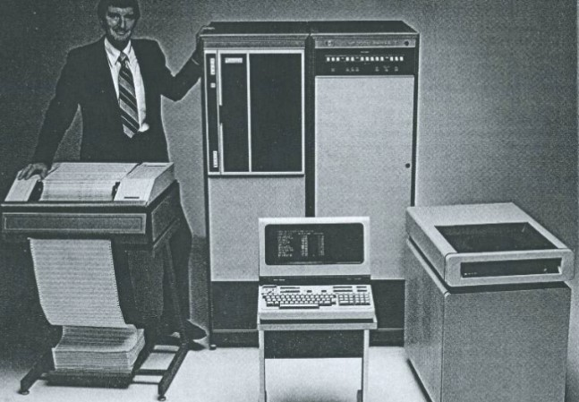

BSU gets computers from H-P
Idaho Statesman January 18, 1986
Hewlett-Packard Co. donated $330,000 worth of computers to Boise State University's College of Business on
Wednesday, a gift that BSU business Dean Thomas Stitzel called a "great leap forward" for the school.
The H-P donation is the company's second major donation to BSU, Stitzel said, and university and
company officials hailed the computers as a new manifestation of the budding partnership between
the university and Boise-area corporations.
The presentation of the new computer equipment was made by Chuck Walter,
manufacturing manager of H-P's Boise division, to BSU President John Keiser on Wednesday morning in the Business School's
data processing area.
Stitzel said the company donated one "state-of-the-art" H-P 3000 model 48 minicomputer,
20 H-P 150 micro computers and a graphics work station.